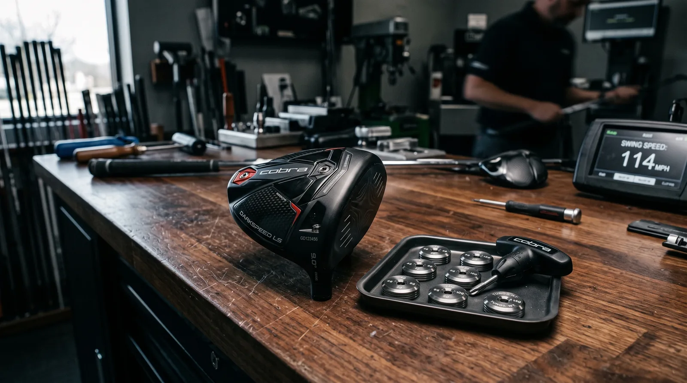
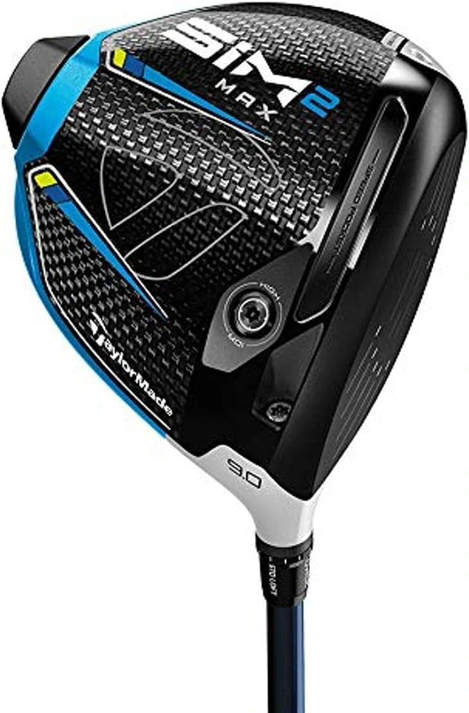
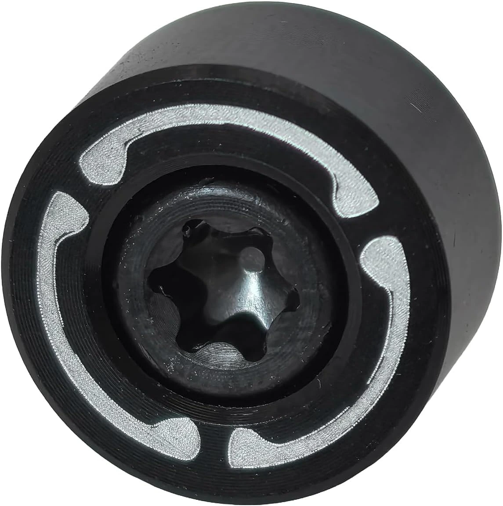

- TaylorMade SIM2 Max Driver — The smartest buy for players who want proven, forgiving distance without the new-release premium. A workhorse that still belongs in any serious bag.
- Custom Weight for TaylorMade Qi10 — Already own the Qi10? Swapping the hosel weight from 2g to 16g is the cheapest, most effective way to dial in your spin rate and launch angle.
- Custom Weight for Callaway Paradym Ai Smoke — The Paradym's AI-designed face responds dramatically to weight placement. A small gram shift translates into a real, measurable draw or fade bias.
The Upgrade Decision: New Driver vs. Tune Your Current One
Every spring, the marketing cycle resets. New drivers arrive with bolder claims, higher prices, and the implicit promise that what you're currently hitting is already obsolete. Most of the time, that is a lie worth calling out.
The honest reality in 2026 is this: if you are playing a driver released within the last three or four years, your equipment is almost certainly not the limiting factor in your tee game. The limiting factor is fit, setup, and swing. A custom weight swap that costs less than a dinner out can change your ball flight more meaningfully than a $700 new-release driver built on incremental gains over a model you could buy on the secondary market for half the price.
That said, some players genuinely need a new driver — either because their current club is genuinely outdated, or because the right fit has simply changed as their swing has evolved. This guide covers both scenarios: the best proven driver to buy on value right now, and the best weight upgrades to extract untapped performance from two of the most popular modern driver heads in play.
1. TaylorMade SIM2 Max Driver

Here is the argument for buying a proven model over the newest release, stated plainly: the TaylorMade SIM2 Max is a better driver than most golfers will ever be able to outgrow, and you can find it for a fraction of what TaylorMade's current flagship costs. The SIM2 Max was built around a simple, honest design principle — give the highest possible number of golfers the longest, most consistent tee shots possible — and it delivered on that promise when it launched, and it delivers on it today.
The SIM2 Max's defining technology is its Inertia Generator, a rear-sole weight channel that pushes mass as low and as far back as engineering allows. That translates into an astronomically high moment of inertia — a measure of how resistant the clubhead is to twisting on off-centre hits. The practical effect is brutal and obvious: mishits stay in play. The ball doesn't balloon or screw left. It just goes, slightly less far than a flush strike, in roughly the direction you were aiming. For the overwhelming majority of amateur golfers, that is exactly the performance metric that matters most.
The Twist Face design also addresses the most common amateur miss patterns — the high-toe strike that flies right, and the low-heel strike that hooks left — by subtly altering the face angle in those specific zones. The result is a driver that self-corrects, quietly, without the player having to think about it. Combined with the large 460cc head profile, which inspires confidence at address, the SIM2 Max is one of the most complete packages TaylorMade has ever built for the non-scratch player. Buy it because it performs. Buy it now because you can get it for a price that makes the new releases look like an insult to common sense.
2. TaylorMade Qi10 Golf Weight Accessory

The TaylorMade Qi10 is one of the most technically advanced driver heads in the modern game. Its carbon-heavy construction, 60-layer carbon crown, and AI-refined face insert produce ball speeds and forgiveness numbers that compete with anything on the market. If you own one and you are not getting the most out of it, the problem almost certainly is not the driver — it is the setup.
The Qi10's adjustable weight system is the most direct lever you can pull to change how the driver performs. The weight port accepts a range from 2 grams to 16 grams, and that swing in mass has real, measurable consequences on your shot shape and trajectory. A heavier weight placed in the heel-rear port loads the centre of gravity toward the back and slightly toward the draw side, promoting a higher launch with more draw bias and a lower spin rate — ideal for players who tend to cut the ball or lose speed with a steep, over-the-top attack angle.
Go lighter, and you shift the CG forward. That tightens spin, lowers the launch ceiling, and introduces a fade-friendly bias — the move for a player with a naturally shallow swing path who is already running high spin numbers and leaking distance because of it. Custom aftermarket weights allow you to experiment across that full spectrum without paying for a fitting session every time you want to try a new configuration. If you already own a Qi10 and you have never experimented with the weight system, you are leaving performance on the table. Start there before you even look at the new-driver shelf.
3. Callaway Paradym Ai Smoke Weight

The Callaway Paradym Ai Smoke is a different animal from the Qi10, and the tuning approach reflects that. Where TaylorMade's driver rewards players who want to change launch angle and spin rate with coarse weight adjustments, the Paradym's AI-optimised face is more sensitive to weight placement as a shot-shape bias tool. The response is sharper and more directional — which makes it an exceptional platform for elite players who know exactly what ball flight they are chasing.
The Paradym Ai Smoke's AI face was designed using machine learning to analyse thousands of impact locations and optimise face flex patterns across the entire hitting surface simultaneously — something a human engineer cannot do by hand. The result is a face that produces remarkably consistent ball speeds across a wider area. But the direction that consistency gets delivered depends heavily on where the weight sits.
Moving mass toward the heel with a heavier port weight rotates the effective CG position, introducing a closed-face bias at impact that promotes a genuine draw — not a fluke, not a one-off, but a repeatable, predictable draw that shows up in your data. Move it toward the toe with a lighter weight configuration, and the bias flips. If you play the Paradym Ai Smoke and feel like your ball flight is slightly off-axis — a persistent fade you didn't want, a slight high-right miss that won't go away — do not reach for a new driver. Reach for a weight kit first. It costs a fraction of a new club and takes four minutes to install.
The Raw Read: What Actually Upgrades Your Tee Game
The gear industry's business model depends on you believing that last year's driver is already a liability. It is not. A SIM2 Max in the right shaft, fitted correctly, will out-perform a brand new $700 release that has never been properly set up for your swing. The performance gap between modern drivers is narrow. The performance gap between a properly fitted driver and a mismatched one is enormous.
Use this hierarchy: if your driver is more than five years old and you have never been fitted, buy something modern and get it set up correctly. The SIM2 Max is one of the smartest buys on the market right now. If you already own a Qi10 or a Paradym Ai Smoke, spend fifteen dollars on a weight kit before you spend seven hundred on a new head. The custom weight is the most underused, most cost-effective performance upgrade available to any golfer playing a modern adjustable driver.
Better equipment helps. Better setup helps more.